How open source communities and development work
Vaclav (Vashek) Petras
NCSU
GeoForAll Lab
at the
Center for Geospatial Analytics
North Carolina State University
NCSU GIS 610-003/603: Tools for open geospatial science
September 13, 2017
Why open source
Motivation for open source
- 80% of developers used open source in past 12 months 1
- 99% in India and China
- numbers greater for students in general
- quality, customizability, no vendor lock-in, flexibility, interoperability 2
- no license fees
- 2014 survey by Forrester Research (presented at All Things Open 2014)
- PCWorld: 10 Reasons Open Source Is Good for Business
Karen Sandler
- executive director of the Software Freedom Conservancy
- a cyborg lawyer 3, 4
- pacemaker/defibrillator implanted
- no review of the software or hardware available
Karen Sandler
Happy users
Users of open source are more happy when using the software.*

Image credit: opensource.com
*No research to support that.
Free, Libre and Open Source Software
Similar to each other:
- open source software
- free software
- free/libre software
- FS, OSS, FOSS, FLOSS
Very different from FLOSS:
- proprietary software
- freeware
- shareware
How open source geospatial development works inside
GRASS GIS
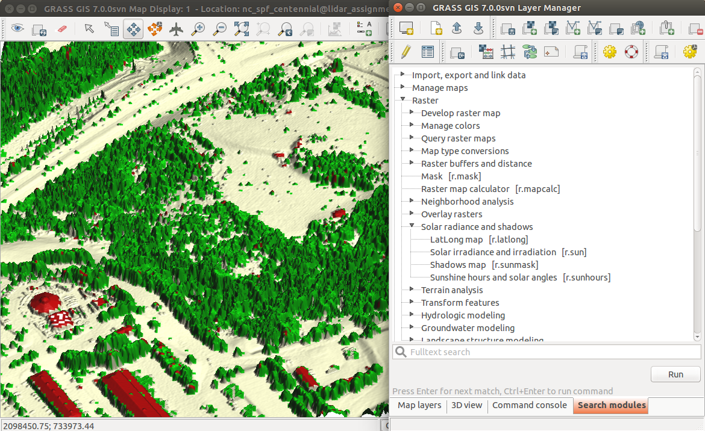
Source code
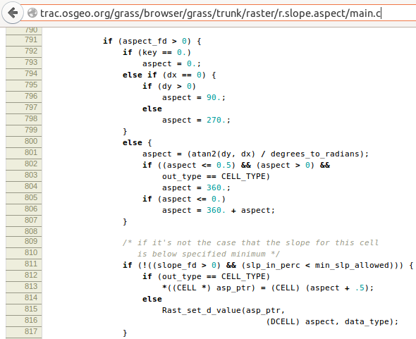
trac.osgeo.org/grass
trac.osgeo.org/grass/...r.slope.aspect...#L790
Changes
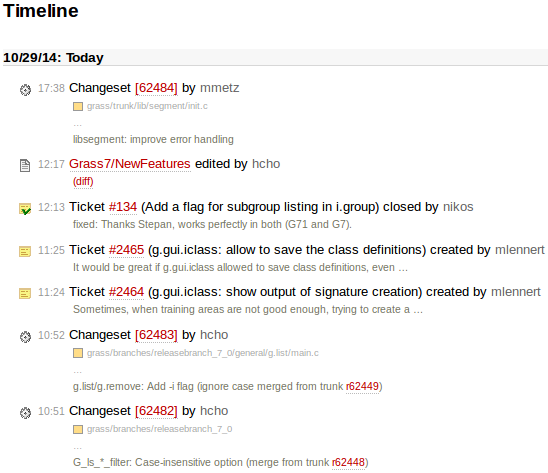
Ticket: Feature request
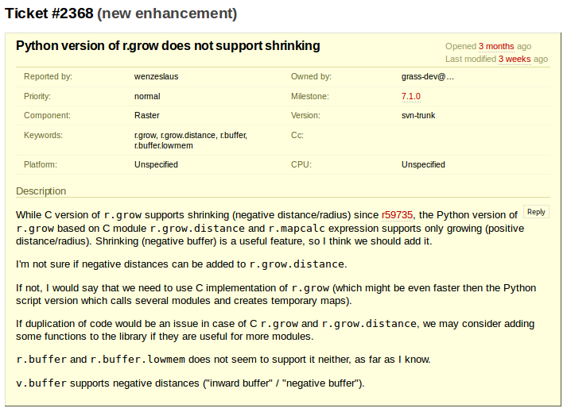
Ticket: Bug report
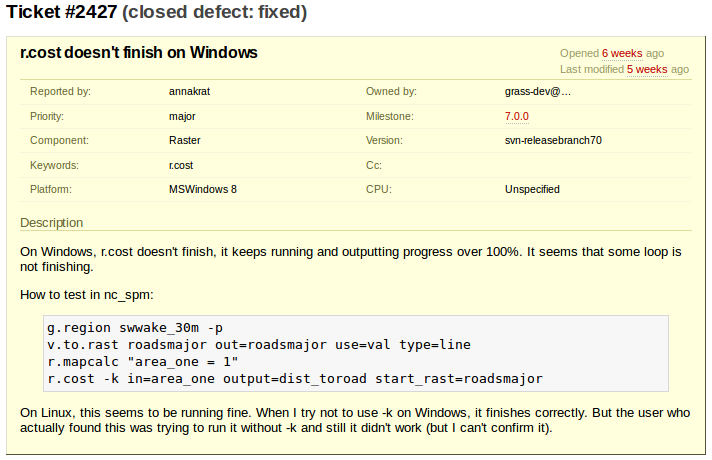
Ticket: Bug report
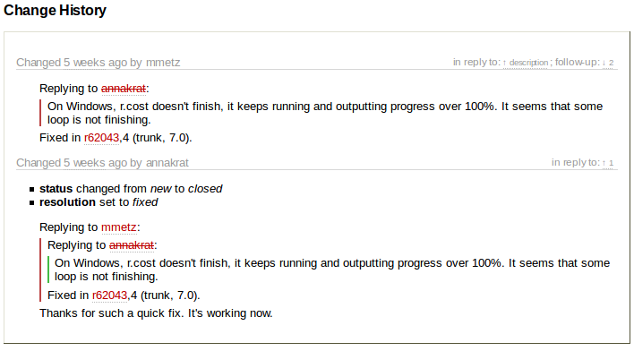
Commit
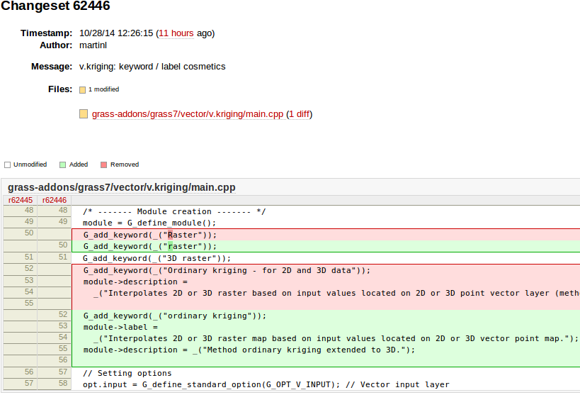
Who can make changes?
Wikipedia:
- everybody can make changes
OpenStreetMap:
- everybody registered can make changes
Open source projects:
- only people with granted access can make changes
- everybody can make changes and submit them for approval
- everybody can discuss changes
- everybody can view changes
Peer review: Revert
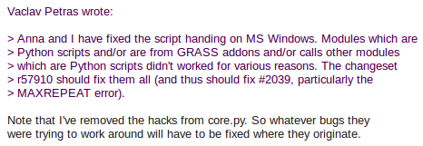
[GRASS-dev] Handling of Python scripts on MS Windows (October, 2013)
Mailing lists
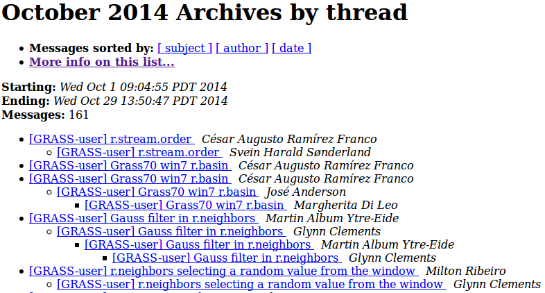
lists.osgeo.org/mailman/listinfo/grass-user
lists.osgeo.org/mailman/listinfo/grass-dev
Other means of communication
- Geographical Information Systems Stack Exchange
- question and answers are ranked to increase quality
- discussions for bug reports and feature requests
- code/community sprints
- ...
Development statistics
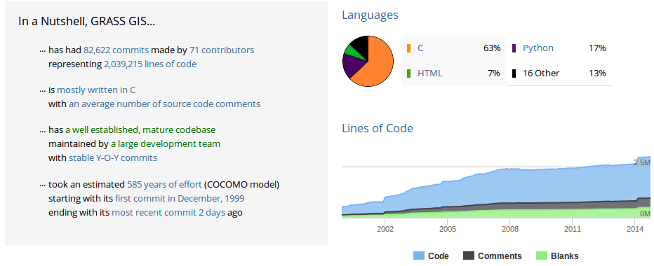
Testing and quality assurance
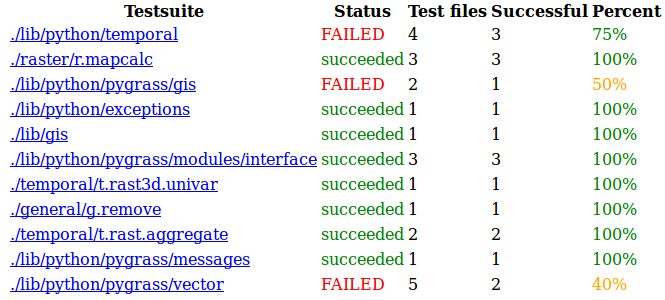
Git and GitHub: latest phenomena
GRASS GIS temporal framework: sharing and reuse
- analysis and management of spatio-temporal data
- published paper with description and use cases
- created for environmental modeling
- integrated into GRASS GIS
- we all can use it to work with our temporal data
Gebbert, S., Pebesma, E. (2014). TGRASS: A temporal GIS for field based environmental modeling. Environmental Modelling & Software, 53, 1-12.
GRASS GIS r.li: sustainable reproducibility and reuse
multiscale analysis of landscape structure
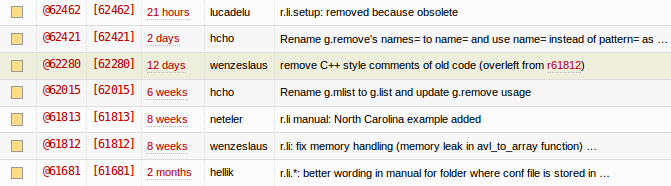
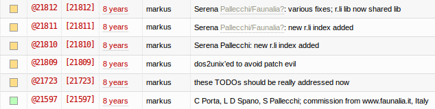
Reproducibility — challenge of current science
- research depends on software
- open source is available to anyone
- format in which we share is not helpful
- source code is suitable for reproducing
- hard to report that something does not work
- pointing out things which are wrong works in open source
Other benefits
- each student has all the tools available,
even those which are not used by school - possibility to work closely with developers
- history of changes and discussions available after years for everybody to learn
- tools to collaborate and share research results
How to use open source
- if your search for a solution was not successful, ask
- report bugs if you encounter them
- open source software is something you can change and influence
- if you change something, contribute back
- you cannot maintain your own version
- share your own work to enable reuse
- your research is worth sharing
- incorporate your work into existing projects
- this is the way to preserve it
Conclusion
What can science gain by using open source?
- there is no inside or outside (everybody can access and contribute)
- shared and reproducible by default (results and processes)
How to make science better using open source?
- start with yourself, add open source tools to your daily workflow
Acknowledgement
Image credits:
- smile and open here images from opensource.com/
- KS photo from allthingsopen.org/
- Linux (penguin), GNU, and GPL logos from gnu.org/
- CC logo from creativecommons.org/
- Open Source Initiative logo from opensource.org/
- GRASS GIS logo from opensource.org/
- Git logo from git-scm.org/
- GitHub (Octocat) logo from octodex.github.com/